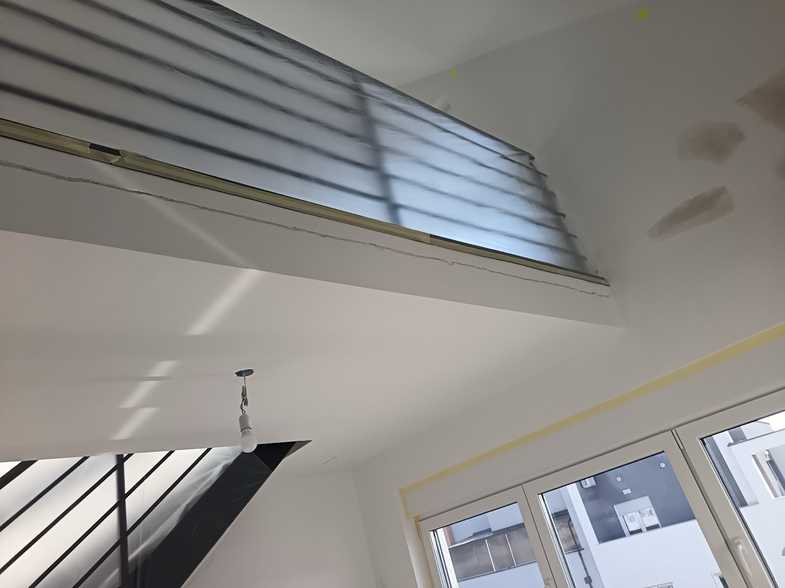
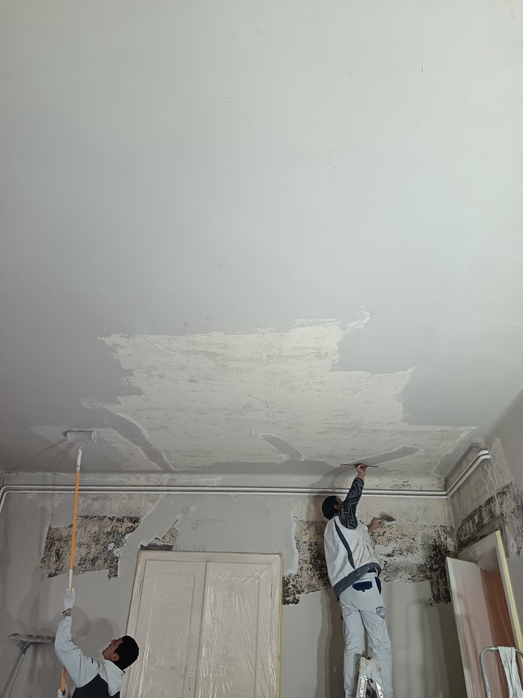
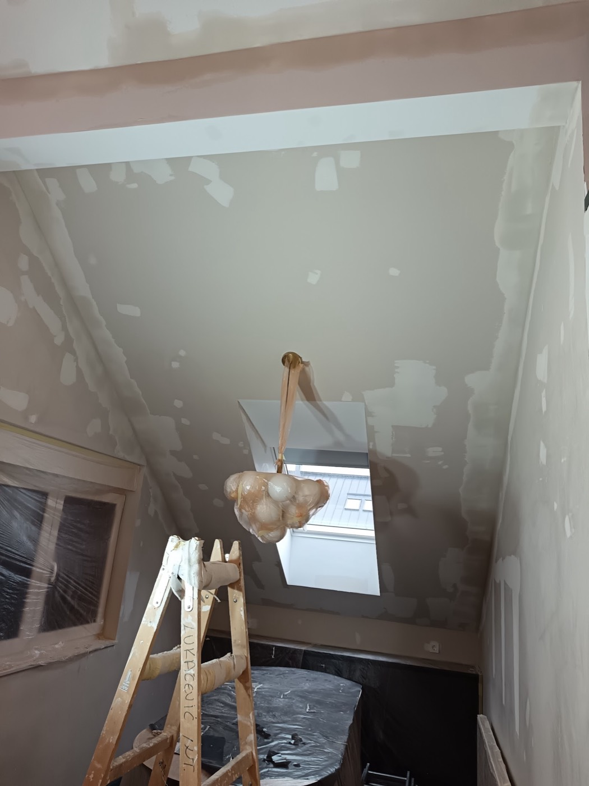

Zaštita prostora
Namještaj i podove pokrivamo folijom, a rubove, prozore i ormariće lijepimo trakom.
Lukačević Interijeri su soboslikari iz Velike Gorice. Prije prvog poteza valjkom pokrijemo namještaj i podove, saniramo oštećenu žbuku, izgletamo zidove i stropove, pa tek onda bojimo. Od sobe i potkrovlja do visokih galerija i stubišta.

Tvrtku LUKAČEVIĆ INTERIJERI j.d.o.o. osnovao je Ivan Lukačević 2023. godine u Velikoj Gorici. Registrirana djelatnost su ostali završni građevinski radovi, a na terenu to znači ono što vidite na našim fotografijama: soboslikarski posao od pripreme do završnog sloja.
Radimo u stanovima i kućama, u potkrovljima s kosinama i u prostorima s galerijom, gdje se do stropa dolazi ljestvama. Na terenu smo od ponedjeljka do subote, od 7 do 17 sati.
Četiri koraka koja se vide na našim fotografijama s terena. Boja je zadnji posao, a ne prvi.
Namještaj i podove pokrivamo folijom, a rubove, prozore i ormariće lijepimo trakom.

Oštećene i ljuskave slojeve skidamo do zdrave podloge, a pukotine i rupe popunjavamo.

Zidove, stropove i kosine gletamo dok površina ne bude ravna i spremna za boju.

Tek na pripremljenu podlogu nanosimo boju, i na visokim stropovima ispod galerija.
Folija preko namještaja i podova, traka na rubovima, prozorima i razvodnim ormarićima.
Skidanje oštećenih slojeva sa zidova i stropova, popravak pukotina i oštećenja.
Izravnavanje zidova i stropova prije bojanja, uključujući spojeve i popravljena mjesta.
Soboslikarski radovi u sobama, stanovima i kućama, od pripreme do završnog sloja.
Kosi stropovi, krovni prozori i uglovi u potkrovlju, gdje je priprema najzahtjevnija.
Visoki stropovi i stropovi ispod galerija, uz zaštitu ograde, stubišta i prozora.
Na fotografijama s naših gradilišta prvo se vidi folija, traka i gletana podloga, a tek onda boja.Sve fotografije na stranici: Lukačević Interijeri
Soboslikarske radove: zaštitu prostora prije radova, sanaciju oštećene žbuke, gletanje te bojanje zidova i stropova, uključujući potkrovlja, kosine, galerije i stubišta.
Nazovite 091 953 5502 ili pošaljite upit preko obrasca ispod, s mjestom, vrstom radova i okvirnom kvadraturom. Fotografija prostora pomaže da se radovi lakše procijene.
Od ponedjeljka do subote od 7 do 17 sati. Nedjeljom ne radimo.
Sjedište tvrtke je u Ulici Augusta Šenoe 30, 10410 Velika Gorica.
| Ponedjeljak – subota | 07 – 17 h |
| Nedjelja | zatvoreno |